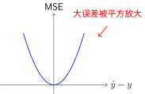
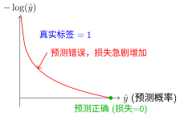

损失函数#
学习任务的形式中我们讨论了分类、回归、自回归三类任务的数学形式。不同任务需要不同的方式量化"预测好坏"——这就是损失函数的作用。
损失函数的本质：定义优化目标#
损失函数衡量模型预测与真实值之间的差异，将训练转化为优化问题。不同的任务类型对应不同的损失函数，塑造了不同的损失曲面几何，影响梯度下降与优化算法优化的难易程度。

损失函数定义误差曲面
核心作用：
回归问题的损失函数#
均方误差（MSE）#
对大错误"零容忍"#
想象你在玩飞镖。如果你投得离靶心很近，误差很小，这没问题。但如果你投偏了很远，平方误差会让这个错误显得特别大——就像老师批改作业时，小错误扣1分，但大错误要扣10分。
为什么平方？ 因为平方让大的偏差被放大。误差为2时，惩罚是4；误差为4时，惩罚是16。这种"零容忍大错误"的特性让模型特别关注那些预测很离谱的样本。
代价：对异常值太敏感。如果数据里有一个极端异常点，MSE会为了讨好它而牺牲其他大部分样本的准确性。
数学形式#
特点：
对大误差惩罚更重（平方增长）
处处可导，便于梯度计算
对异常值敏感

MSE损失函数形状
平均绝对误差（MAE）#
一视同仁的"公平裁判"#
MSE 像是一个严厉的老师——小错误扣分少，大错误扣分特别多。而 MAE 更像是一个公平的裁判：偏差1就扣1分，偏差10就扣10分，一视同仁。
优势：不会被个别极端值带偏。如果数据里有噪声或异常点（比如房价数据里混入了一个标价10亿的豪宅），MAE 不会为了这一个点而牺牲对其他正常房价的预测准确性。
代价：在误差为0的点不可导（像是一个尖角而非平滑的曲线），优化时会稍微麻烦一些。而且，因为它对所有错误一视同仁，对小错误的"惩罚力度"不够，收敛可能比 MSE 慢。
特点：
对异常值更鲁棒（线性惩罚）
在零点不可导（可用次梯度）
Huber损失（Smooth L1）#
分情况的讨论#
Huber 损失 [Hub64] 像一个有智慧的老师，懂得因材施教：
小错误时（误差 ≤ δ）：像 MSE 一样严厉——"这点小错都不能犯？给我好好学！"平方惩罚让模型对小误差敏感，快速收敛。
大错误时（误差 > δ）：像 MAE 一样理性——"已经错这么远了，再骂也没用。"线性惩罚避免异常值主导整个训练。
参数 δ 的作用：设定一个"红线"。偏差在红线内用平方（严格），超过红线改用线性（宽容）。目标检测任务常用 Huber 损失，因为位置偏差小时要精确定位，偏差大时可能是标注噪声，不必过分纠结。
数学形式#
特点：
小误差：MSE（平滑）
大误差：MAE（鲁棒）
常用于目标检测等任务
分类问题的损失函数#
交叉熵损失（Cross-Entropy）#
从编码角度理解#
想象你要传递一条消息：“这是一张猫的图片”。如果只有10个可能的类别，最直接的编码方式是给每个类别分配一个编号（0-9）。但这种方式有问题：如果模型预测"狗"的概率是80%而"猫"是20%，我们丢失了预测信心信息。
更好的方式是使用概率分布作为编码。模型输出 \([0.1, 0.7, 0.05, ...]\) 表示对每个类别的信心。
One-Hot编码：将类别标签转换为向量，对应类别的位置为1，其余为0。

One-Hot编码示例
为什么叫"One-Hot"？
One：只有一个位置是1
Hot：这个位置"激活"（热），其余都是"冷"（0）
交叉熵公式#
交叉熵衡量用预测分布 \(Q\) 来编码真实分布 \(P\) 所需的平均信息量：
对于分类问题（\(P\) 是one-hot编码），这简化为：
关键性质：
预测越准（概率接近1），损失越低
对错误预测惩罚很大（预测接近0时损失→∞）
与softmax配合，梯度形式简洁

交叉熵损失：惩罚错误预测
为什么不用MSE做分类？
MSE在预测概率接近0或1时梯度很小，学习缓慢
交叉熵在错误预测时提供更强的梯度信号
KL散度（Kullback-Leibler Divergence）#
直觉：额外的编码代价#
想象你有一个完美的天气预测模型 \(P\)（知道每天实际下雨的概率），但你只能用另一个模型 \(Q\) 来做预测。KL散度衡量的是：因为使用了不完美的 \(Q\) 而不是真实的 \(P\)，你需要多传输多少信息。
直观例子：
如果 \(Q = P\)（预测完美），额外代价为0
如果预测经常出错，代价就高
非对称：用 \(Q\) 近似 \(P\) 的代价 ≠ 用 \(P\) 近似 \(Q\) 的代价
与交叉熵的关系#
其中 \(H(P)\) 是分布 \(P\) 的熵（信息论中最小可能编码长度）。因为真实分布 \(P\) 是固定的，\(H(P)\) 是常数。因此：
最小化交叉熵 = 最小化KL散度 = 让预测分布尽可能接近真实分布
应用场景#
变分自编码器（VAE）：约束潜在变量 \(z\) 的分布接近标准正态分布
知识蒸馏：让小模型学习大模型的"软预测"（概率分布），而非硬标签
强化学习：限制策略更新幅度，防止模型突变
损失函数选择指南#
问题类型 |
推荐损失 |
优势 |
注意事项 |
|---|---|---|---|
回归问题 |
MSE / MAE |
MSE光滑可导，MAE鲁棒 |
数据有异常值时选MAE |
回归（需鲁棒性） |
Huber损失 |
结合两者优点 |
需要调超参数\(\delta\) |
二分类 |
二元交叉熵 |
梯度强、收敛快 |
输出需sigmoid激活 |
多分类 |
交叉熵 |
配合softmax效果最佳 |
PyTorch的CE包含softmax |
分布匹配 |
KL散度 |
衡量分布差异 |
注意方向性\(P\|Q\) |
PyTorch实现示例#
import torch
import torch.nn as nn
# 回归损失
mse_loss = nn.MSELoss()
mae_loss = nn.L1Loss() # MAE
huber_loss = nn.SmoothL1Loss(beta=1.0)
# 分类损失
ce_loss = nn.CrossEntropyLoss() # 包含softmax
bce_loss = nn.BCELoss() # 二分类，需手动sigmoid
kl_loss = nn.KLDivLoss(reduction='batchmean')
# 使用示例
predictions = model(inputs)
loss = ce_loss(predictions, targets) # 多分类
loss.backward() # 计算梯度
总结#
损失函数定义了"什么是好的预测"，将训练转化为优化问题：
回归问题：MSE光滑易优化，MAE鲁棒抗异常值
分类问题：交叉熵提供强梯度，是深度学习的主流选择
分布匹配：KL散度衡量概率分布差异，VAE和知识蒸馏的核心工具
理解损失函数后，我们将探讨反向传播算法——如何高效计算梯度，完成误差的"信用分配"。
参考文献#
Peter J Huber. Robust estimation of a location parameter. The Annals of Mathematical Statistics, 35(1):73–101, 1964.
贡献者与修订历史
查看详细修订记录
-
f159d562026-05-08 - Heyan Zhu: fix: address complaints from the linter -
59126f42026-04-26 - Heyan Zhu: docs(math-fundamentals): update content structure and add citations -
ae2053f2026-04-26 - Heyan Zhu: docs(math-fundamentals): add task-formulations and update related content -
756a7932026-04-25 - Heyan Zhu: docs(math-fundamentals): update content structure and improve explanations -
dcecce42026-01-26 - Heyan Zhu: docs: enrich math fundamentals documentation with code captions and TikZ visualizations -
0c291d72025-12-10 - Heyan Zhu: docs: restructure course materials and add new content